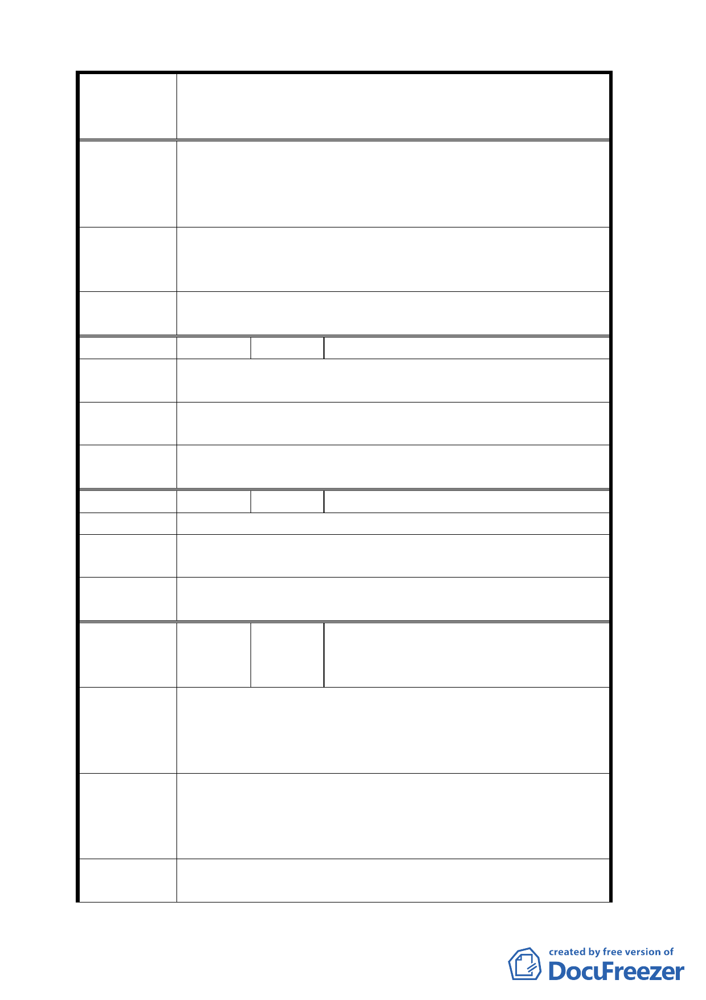

案名
陳情理由
建議辦法
委員會
決議
編號
陳情理由
建議辦法
委員會
決議
編號
陳情理由
建議辦法
委員會
決議
編號
陳情理由
建議辦法
委員會
決議
變更臺北市華光社區暨週邊地區住宅區、電信用地、郵
政用地及變電所用地土地為商業區、數位科技專用區及
金融服務專用區主要計畫案
1.請市政府先行考量本計畫區內住戶安置問題及補償事
宜後，再重新計畫本案。
2.若將來市府要標售本地段時，需由原住戶為第一優先
購買者。
因住戶地上權為合法持有，請市政府需按市價補償
或在本案興建住宅，原地安置住戶，以屋換屋，或由本
計畫區內住戶購買土地自行興建住宅，照顧市民。
同編號 2 決議。
7 陳情人 林何麗金、林爾康、錢士賢
請市政府先行考量本計畫區內住戶安置問題及補償
事宜後，再重新計畫本案。
因住戶地上權為合法持有，請市政府需按市價補償
或在本案興建住宅，原地安置住戶。
同編號 2 決議。
8 陳情人 譚國棟、陸央生
因住戶地上權為合法持有，請市政府需按市價補
償，以屋換屋，或由住戶購買土地自行興建住宅。
同編號 2 決議。
黃文忠、劉愛玲、王培安、謝夢桃、
9 陳情人 唐許香、黃永玓、謝登台、林蘇華、
漆忠全、鄭國英
請市政府在本案興建住宅區，安置本案內住戶。若
將來市府要標售本地段時，需由原住戶為第一優先購買
者，以便本案內住戶購買土地自行興建住宅區，請市府
照顧市民。
請市府依促進民間參與公共建設法，由民間機構投
資興建營運。因住戶地上權為合法持有，請市政府需按
市價補償或在本案興建住宅，原地安置住戶，以屋換
屋，照顧市民。
同編號 2 決議。
- 11 -